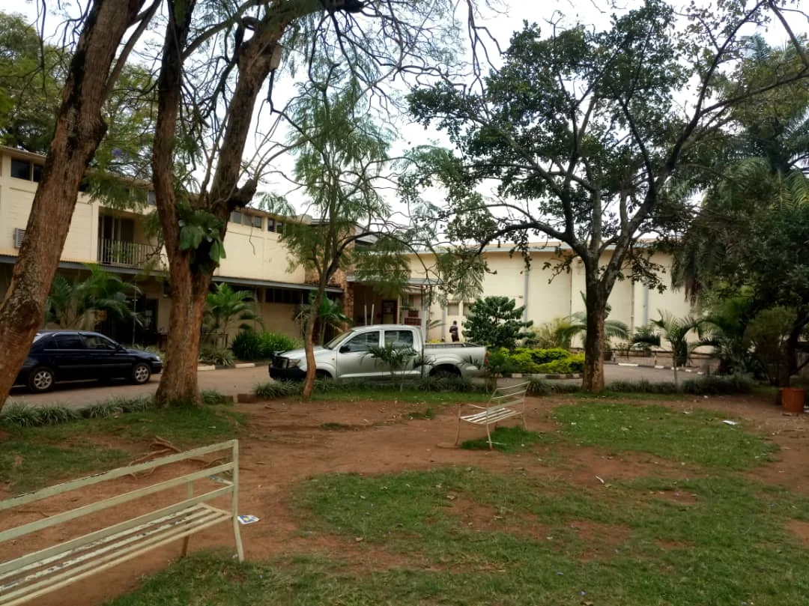

The Uganda Museum is most rewarding when approached as orientation, not obligation. It gathers archaeology, music, ethnography, and social history into one place, giving visitors a chance to see how many Ugandas exist beneath the simplified travel image of parks and primates.
That breadth is exactly what makes the museum valuable. Instead of one single narrative, it offers a layered view of the country through objects, instruments, stories, and evidence of everyday life across time. The experience creates context, and context makes every other part of the trip feel sharper.
For travelers spending time in Kampala, the museum is one of the easiest ways to add meaning to the city beyond traffic, landmarks, and good restaurants.
Why Museums Matter In A Travel Itinerary
A good museum changes the quality of seeing. Once visitors understand more about craft, music, identity, or historical movement, the country outside the museum begins to look more detailed. Things that once felt incidental suddenly carry greater meaning.
That is the museum's best gift: not facts alone, but a better eye.
The Human Story Comes Forward
Uganda's landscapes are stunning, but the museum helps re-center the people, traditions, and histories that make those landscapes culturally alive. It reminds visitors that travel here is not only ecological or scenic. It is deeply human.
This human emphasis is what makes the stop worth real attention.
Best Used Early In A Trip
If possible, visit the museum near the beginning of your Uganda journey. It will frame what follows more intelligently, from music heard in the city to artifacts seen in craft markets and traditions encountered on the road.
For readers wanting a more grounded and informed trip, the Uganda Museum is a very smart place to start.